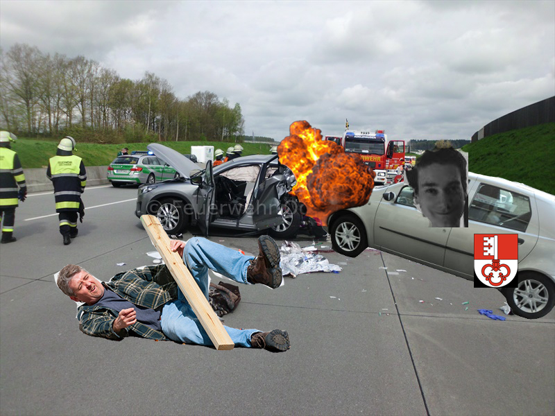

Verkehrsunfall auf der A14 richtung Zug
Am Freitag Abend ereignete sich ein Verkehrsunfall mit tödlichen Folgen.
Ein Angehöriger der obwaldner Mafia, welcher sich mit Komplementärmedizin
und anderen illegalen Substanzen zugedröhnt hat fuhr mit voller Wucht (~3 km/h)
einem unpriviligierten Farbigen mit Migrationshintergrund ins Heck seines
geleasten BMWs. Auch wenn Ambulanz und Feuerwehr sofort eingeschaltet wurden
kam für das Opfer alle Hilfe zu spät. Dieser verstarb noch an der Unfallstelle.
